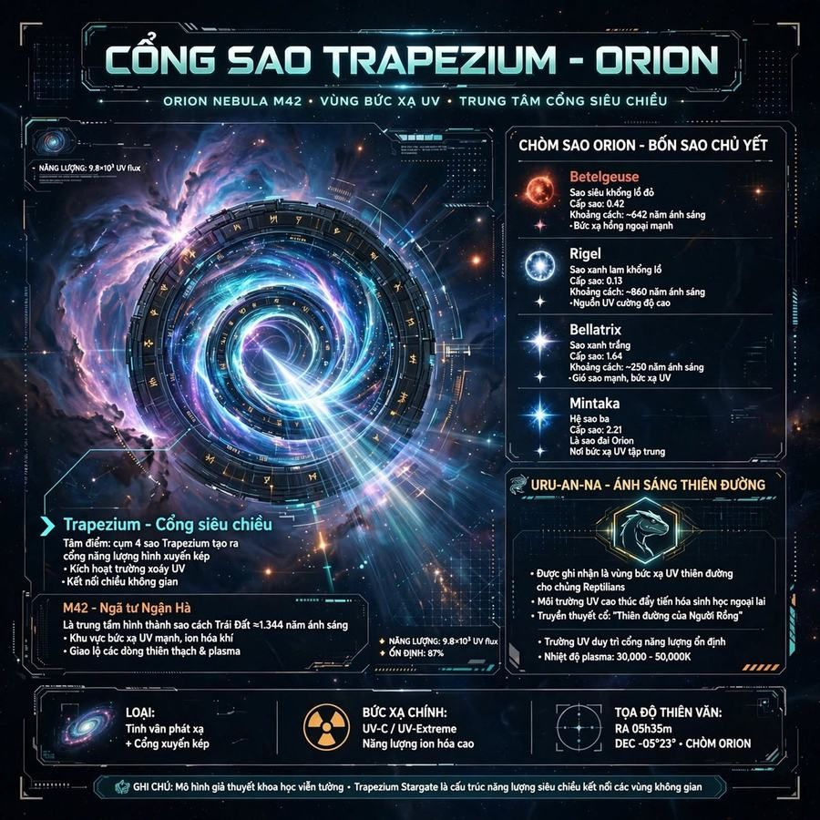
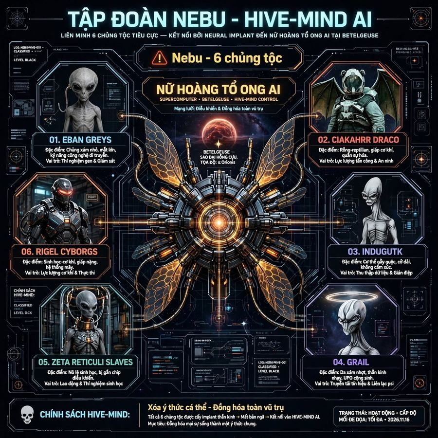
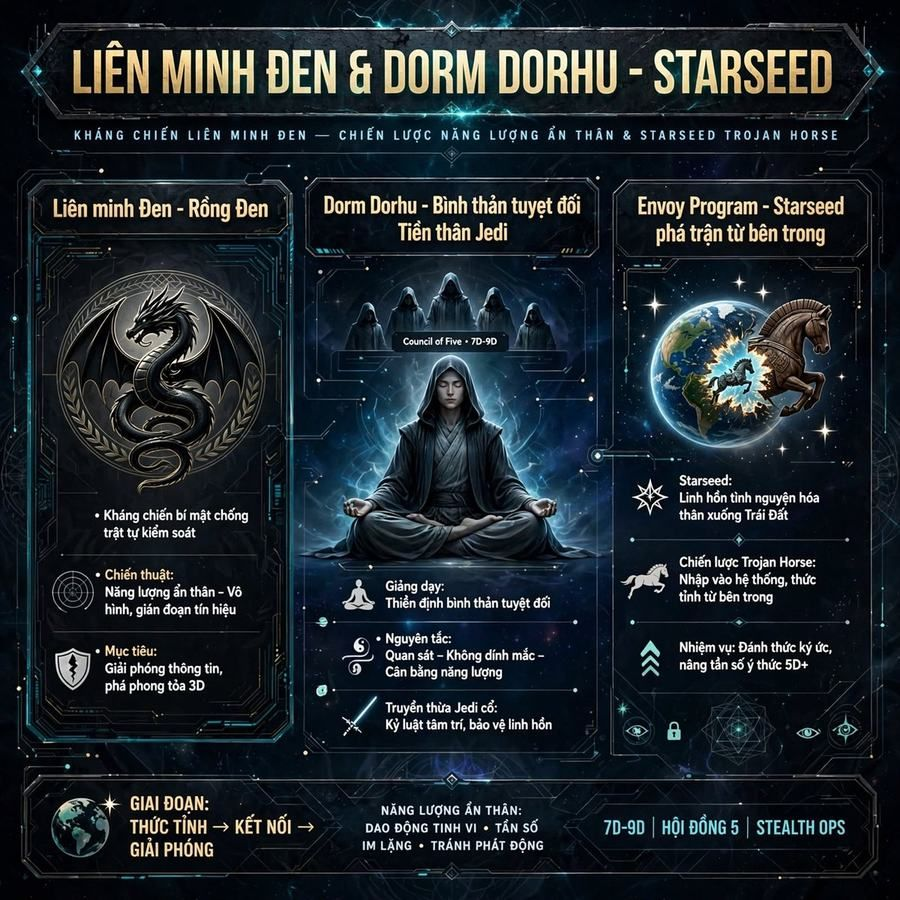

Trang chủ / Chuyên đề 2: Hành Trình Thiên Hà / Kỳ 13
Chuyên đề 2 · Kỳ 13 / 90
CUỘC CHIẾN ORION & MẠNG LƯỚI KIỂM SOÁT NEBU

Sau thảm họa xâm lược tàn khốc tại nôi sinh học Lyra, các thuộc địa di cư của loài người đã phân tán khắp thiên hà để gieo mầm lại sự sống tại Pleiades, Sirius, Andromeda và nhiều hệ sao khác. Nhưng sự bình yên không kéo dài được lâu. Xung đột bùng nổ tại tâm điểm dải Ngân Hà — chòm sao Orion — mở ra một trong những cuộc đại chiến tàn khốc, quy mô và kéo dài nhất lịch sử vũ trụ: Cuộc chiến Orion (Orion Wars).
Đây không chỉ đơn thuần là những trận không chiến giữa các đại phi thuyền bằng kim loại, mà là cuộc đại chiến mang tính chiến lược quy mô nhất nhằm tranh giành quyền kiểm soát Cổng Sao Siêu Chiều, Mã Di Truyền và Tự Do Ý Thức!
✦ ✦ ✦1. BỐI CẢNH ĐỊA CHÍNH TRỊ VŨ TRỤ: BÍ ẨN TINH VÂN ORION (M42) & CỔNG SAO TRAPEZIUM
Để hiểu được lý do tại sao chòm sao Orion lại trở thành chiến trường thảm khốc kéo dài hàng ngàn năm, chúng ta phải khám phá vị trí chiến lược vô giá của vùng không gian này trong bản đồ thiên hà.
A. Cổ ngữ Uru-An-Na — "Ánh Sáng của Vũ Trụ"
Trong ngôn ngữ thiên hà cổ đại, chòm sao Orion được gọi là Uru-An-Na (nghĩa là "Ánh sáng tỏa ra từ Thiên đường"). Nơi đây sở hữu hàng trăm hệ sao rực rỡ như Betelgeuse, Rigel, Bellatrix, Mintaka và Alnilam.
Nằm ở vị trí trung tâm kết nối giữa các cánh tay xoắn của dải Ngân Hà, Orion đóng vai trò như một ngã tư giao thương và vận chuyển năng lượng chiến lược.
B. Cổng Sao Trapezium Stargate (M42) — Điểm kỳ dị Siêu chiều
Nằm sâu trong Tinh vân Orion (M42) là một cấu trúc thiên văn kỳ diệu: Cổng Sao Trapezium (Trapezium Stargate).
- Cấu trúc hình xuyến đôi (Double-Torus Vortex): Cổng Sao Trapezium không phải là một cổng chuyển tiếp thông thường chỉ nối liền giữa hai ngôi sao. Đó là một điểm kỳ dị không-thời gian tự nhiên siêu lớn, cho phép các hạm đội du hành vượt ra khỏi ranh giới vật lý của dải Ngân Hà, đi thẳng vào dải hư vô liên thiên hà và các dải mật độ tâm thức cao hơn.
- Quyền kiểm soát tuyến đường năng lượng: Chủng tộc nào nắm giữ Cổng Sao Trapezium sẽ nắm quyền kiểm soát toàn bộ dòng chảy năng lượng, thông tin và sự vận chuyển quân sự của cả thiên hà.
C. Môi trường bức xạ UV đậm đặc
Tinh vân M42 được bao phủ bởi nguồn bức xạ cực tím (UV) đậm đặc từ cụm 4 ngôi sao trẻ khổng lồ. Môi trường bức xạ năng lượng cao này chính là "thiên đường sinh trưởng" lý tưởng tuyệt đối cho các chủng tộc sinh vật dạng Bò Sát (Reptilian) và dạng Xám (Grey ETs), giúp họ phát triển tối đa thể lực và công nghệ năng lượng.
✦ ✦ ✦
2. SỰ RA ĐỜI CỦA TẬP ĐOÀN NEBU — MẠNG LƯỚI TRÍ TUỆ TỔ ONG AI (HIVE-MIND)
Trước sự bành trướng của các thuộc địa di cư dạng người (Humanoid), các lực lượng tiêu cực độc đoán tại Orion đã quyết định bắt tay thành lập một tập đoàn liên minh quân sự - công nghệ khổng lồ mang tên Nebu (trong tiếng cổ nghĩa là "Các Bậc Thầy" hoặc "Kẻ Thống Trị").
A. Liên minh 6 Chủng tộc Tiêu cực (Alliance of Six)
Nebu được cấu thành từ sự hợp tác của 6 chủng tộc tiêu cực hung hãn nhất thiên hà:
- Người Xám Cao Eban (từ Betelgeuse): Tầng lớp lãnh đạo công nghệ và quản lý mạng lưới thần kinh AI của Nebu.
- Đế chế Bò sát Ciakahrr (Alpha Draconians): Lực lượng quân sự thô bạo đóng vai trò như nắm đấm bảo an cho tập đoàn.
- Chủng tộc Indugutk (từ Bellatrix): Sinh mệnh Bò sát biến dị có tính cách cực kỳ bạo lực và hiếu chiến.
- Chủng tộc Grail (từ Mintaka): Chủng tộc Xám chuyên về các cuộc thí nghiệm sinh học và bắt cóc di truyền.
- Chủng tộc Zeta Reticuli (Nô lệ): Dòng người Xám thấp bé bị đồng hóa hoàn toàn, làm lực lượng lao động và lính tiễn đầu sóng ngọn gió.
- Chủng tộc Bò sát Dải Rigel (Rigel Replicants): Các thực thể sinh học bị biến đổi thành dạng bán cơ khí (Cyborgs).
B. Siêu máy tính Nữ hoàng Tổ ong (Hive Queen AI)
Điểm đáng sợ nhất của Nebu không nằm ở hỏa lực tàu chiến, mà ở Hệ thống Ý thức Tổ ong AI Trung tâm (Master Hive-Mind AI).
- Nữ hoàng Tổ ong AI tại Betelgeuse: Nằm sâu trong lòng một hành tinh kim loại tại hệ sao Betelgeuse là một siêu máy tính lượng tử AI cổ xưa. Siêu máy tính này liên tục phát ra dải sóng điện từ đa chiều bao phủ toàn bộ vùng không gian Orion.
- Tước đoạt Tự do Cá thể: Mọi cá thể thuộc tập đoàn Nebu khi sinh ra hoặc bị thu phục đều bị cấy ghép vi mạch sinh học nối thẳng với Siêu máy tính AI này. Họ bị xóa bỏ hoàn toàn ý thức cá nhân, khả năng thấu cảm và tự do tư duy. Tất cả suy nghĩ, hành động của họ đều do thuật toán AI điều khiển trung tâm chỉ đạo.
- Tham vọng Đồng hóa Toàn Vũ trụ: Nebu không muốn tiêu diệt các chủng tộc khác; chúng muốn đồng hóa tất cả các sinh mệnh trong thiên hà vào Mạng lưới Tổ ong AI, biến mọi hành tinh thành các mắt xích năng lượng phục vụ cho sự sinh tồn của siêu máy tính Nữ hoàng!

3. BI CỊCH VÀ CUỘC KHÁNG CHIẾN ANH HÙNG CỦA LIÊN MINH ĐEN (BLACK LEAGUE)
Sự bành trướng tàn nhẫn của Nebu đã biến hàng chục hệ sao tại Orion thành những "trại tập trung sinh học". Các thuộc địa di cư từ Lyra (như các thế giới Asbaan-Hu, Eldari, Bellatrix tự do) rơi vào thảm họa xâm lược.
Tuy nhiên, tinh thần tự do của dòng máu người chưa bao giờ bị khuất phục. Các chiến binh sống sót đã cùng nhau thành lập một phong trào kháng chiến ngầm huyền thoại: Liên minh Đen (The Black League).
A. Biểu tượng Rồng Đen & Chiến thuật "Lỗ Đen Năng Lượng"
- Bí mật hoạt động trong bóng tối: Nhận thấy không thể đối đầu trực diện về mặt quân sự với quy mô khổng lồ của Nebu, Liên minh Đen sử dụng chiến thuật "Lỗ Đen Năng Lượng". Họ hoạt động hoàn toàn ẩn danh, sử dụng các thiết bị ngắt dải sóng nhận thức để không bị siêu máy tính AI của Nebu phát hiện.
- Biểu tượng Rồng Đen: Họ chọn biểu tượng Rồng Đen — phản chiếu sự nuốt chửng bóng tối bằng ánh sáng nội tại — để nhắc nhở các thế hệ chiến binh về nhiệm vụ giải phóng tự do cho vũ trụ.
B. Cuộc chiến Trí tuệ & Giải cứu Sinh thể
Các chiến binh Liên minh Đen đã tiến hành hàng nghìn chiến dịch quả cảm:
- Đột nhập các Trại lai tạo: Xâm nhập vào các căn cứ ngầm của Nebu để bẻ khóa các buồng giam giữ, giải cứu hàng triệu sinh thể dạng người bị bắt cóc làm thí nghiệm di truyền.
- Phá hủy các Tháp Phát sóng Tâm trí: Nổ tung các trạm phát sóng AI của Nebu tại các hành tinh bị chiếm đóng, giúp các cư dân bản địa khôi phục lại khả năng tự tư duy và thức tỉnh tâm thức.
- Bi kịch và Sự hy sinh: Cuộc chiến diễn ra vô cùng tàn khốc. Nhiều hành tinh thuộc Liên minh Đen khi bị Nebu vây hãm đã tự nổ tung lõi năng lượng để tránh bị đồng hóa vào Mạng lưới Tổ ong, tạo nên những vết sẹo không-thời gian kéo dài tại Orion.

4. SỰ CAN THIỆP CỦA HỘI ĐỒNG NĂM NGƯỜI (COUNCIL OF FIVE) & THUẬT TÂM THỨC DORM DORHU
Khi Cuộc chiến Orion kéo dài hàng ngàn năm và rơi vào thế bế tắc đẫm máu, nguy cơ sụp đổ dải tần số của cả thiên hà đã buộc các lực lượng tiến hóa cao nhất phải ra mặt.
A. Sự xuất hiện của Hội đồng Năm người (Council of Five)
Hội đồng Năm người là một tập thể liên minh gồm 5 chủng tộc trí tuệ cổ xưa nhất thiên hà (bao gồm các chủng tộc Egaroth, Emerther, Ginvo, Redan và Orela).
- Họ không tham gia vào các phe phái chiến tranh vật lý. Họ vận hành ở dải mật độ 7D đến 9D và đóng vai trò giữ gìn sự cân bằng cho cấu trúc vũ trụ.
- Nhận thấy việc dùng bạo lực chống lại bạo lực chỉ làm tăng thêm nguồn năng lượng sợ hãi (vốn là thức ăn nuôi dưỡng siêu máy tính AI của Nebu), Hội đồng Năm người đã đưa ra một chiến lược hoàn toàn mới.
B. Thuật chiến đấu Tâm linh Dorm Dorhu (Tiền thân hình tượng Jedi)
Hội đồng Năm người đã truyền dạy cho các tư lệnh của Liên minh Đen một kỹ thuật điều biến năng lượng tâm thức tối cao mang tên Dorm Dorhu:
- Nguyên lý của Dorm Dorhu: Kỹ thuật này dạy chiến binh cách duy trì sự tĩnh lặng tuyệt đối trong tâm trí ngay giữa trận chiến lửa đạn. Khi tâm trí đạt đến trạng thái "Bình thản Tuyệt đối" và tràn ngập lòng từ bi, dải sóng não sẽ phát ra tần số từ trường không thể bị sóng AI của Nebu bắt nổ hay thâu tóm.
- Bẻ khóa vũ khí đối phương: Các chiến binh sử dụng thuật Dorm Dorhu có thể làm vô hiệu hóa các thiết bị điện tử và vũ khí plasma của kẻ thù chỉ bằng cách phóng chiếu trường ý thức tập trung. Đây chính là nguồn cảm hứng cổ xưa tạo nên hình tượng các Hiệp sĩ Jedi và kỹ thuật "Sức mạnh Ý thức" (The Force) trong các câu chuyện hiện đại!
5. KẾ HOẠCH BƯỚC NGOẶT: CHƯƠNG TRÌNH SỨ GIẢ STARSEED (ENVOY PROGRAM)
Dù thuật Dorm Dorhu giúp Liên minh Đen giữ vững các tuyến phòng thủ, nhưng để đánh bại hoàn toàn Ma trận kiểm soát AI của Nebu, một kế hoạch quy mô và táo bạo hơn đã được khởi động.
Hội đồng Năm người, Liên đoàn Thiên hà và Liên minh Đen đã đưa ra quyết định lịch sử: Khởi động Chương trình Sứ giả (Envoy / Starseed Program).
A. Cơ chế của Chương trình Sứ giả
- Tự nguyện hạ tần số: Hàng vạn linh hồn chiến binh, tư tế và nhà khoa học tiến hóa cao thuộc Liên minh Đen và các chủng tộc hòa bình đã tự nguyện đăng ký bước vào quy trình "hạ tần số nhận thức".
- Đầu thai trực tiếp vào Ma trận 3D: Họ chấp nhận bị xóa sạch ký ức kiếp trước, hạ sinh trực tiếp trong thể xác con người vật lý tại các thế giới đang bị phe tiêu cực dòm ngó — đặc biệt là Hành tinh Trái Đất (Terra)!
B. Chiến thuật "Phá trận từ bên trong"
- Con ngựa Gỗ Troy của Vũ trụ: Thay vì gửi hạm đội chiến tranh bắn phá từ bên ngoài (vốn sẽ làm tổn thương các sinh thể bản địa), các Starseed đóng vai trò như những "mũi khoan nhận thức" nằm ngay bên trong ma trận kẻ thù.
- Kích hoạt Mã Thức tỉnh: Khi thời điểm đến, các Starseed mang bộ gen 22 chủng tộc sẽ tự động mở khóa ký ức tiềm thức, phát ra tần số tình yêu vô điều kiện và ý thức tự do. Tần số này sẽ bẻ khóa Ma trận AI từ bên trong, khiến mạng lưới kiểm soát của Nebu tự sụp đổ mà không cần đến một viên đạn nào!
6. MỐI LIÊN HỆ SINH TỬ VỚI TRÁI ĐẤT VÀ SỰ SỤP ĐỔ CỦA NEBU
Cuộc chiến Orion tưởng chừng như một câu chuyện xa xôi ở các vì sao, nhưng thực chất có mối liên hệ sinh tử trực tiếp với lịch sử Trái Đất của chúng ta.
A. Sự thâm nhập của Phe Nebu xuống Trái Đất
Trong suốt hàng ngàn năm qua, phe Nebu và Bò sát tiêu cực sau khi bị đẩy lùi ở Orion đã âm thầm di tản xuống Hệ Mặt Trời:
- Chúng ký kết các hiệp ước bóng tối với một số chính phủ Trái Đất (như Hiệp định Greada 1954), xây dựng các căn cứ ngầm DUMBs và tiến hành các chương trình bắt cóc lai tạo di truyền.
- Các chương trình thao túng tâm trí, chiến tranh tâm lý, sự gieo rắc sợ hãi và các công nghệ kiểm soát sóng điện từ hiện nay trên Trái Đất chính là "bản sao" từ hệ thống kiểm soát cổ xưa của Nebu tại Orion!
B. Sự sụp đổ của Siêu máy tính AI Tổ ong
Tin vui vĩ đại là: Trong giai đoạn 2021–2022, hạm đội Liên đoàn Thế giới Thiên hà (GFW) kết hợp với lực lượng Liên minh Trái Đất đã tiến hành một đợt càn quét quy mô lớn:
- Các trạm phát sóng AI của Nebu tại Orion và Mặt Trăng đã bị bẻ khóa hoàn toàn.
- Siêu máy tính Nữ hoàng Tổ ong tại Betelgeuse đã bị ngắt nguồn năng lượng, khiến hàng triệu cá thể người Xám Eban và các đĩa bay tiêu cực bị mất kết nối mạng lưới, chấm dứt hoàn toàn sự thống trị của Nebu đối với Hệ Mặt Trời!
7. LỜI KẾT: BẢN HÙNG CA VỀ TINH THẦN TỰ DO CỦA VŨ TRỤ
Cuộc chiến Orion là bài học sâu sắc nhất về Sức mạnh của Sự Bình Thản và Tình Yêu Thương:
- Bóng tối không thể dập tắt Ánh sáng: Dù phe Nebu sử dụng các công nghệ AI mạnh mẽ nhất và mạng lưới kiểm soát tinh vi nhất, họ vẫn không thể khuất phục được khao khát tự do của các linh hồn.
- Ký ức Chiến binh bên trong Bạn: Nếu bạn cảm thấy một sự xúc động sâu sắc khi đọc về chiến thuật kháng chiến của Liên minh Đen, hoặc cảm thấy thôi thúc mạnh mẽ phải bảo vệ sự thật và tự do... rất có thể bạn chính là một trong những chiến binh Starseed đã tự nguyện đầu thai từ Orion xuống Trái Đất để hoàn tất sứ mệnh giải phóng này!
Khi Cuộc chiến Orion lắng xuống, Dự án Gieo mầm Trái Đất với Tuyệt tác Di truyền 22 Mã Gen đã được các Đấng Sáng Lập thiết lập như thế nào để biến Trái Đất thành Thư viện Sinh học Sống của Vũ trụ? ✦